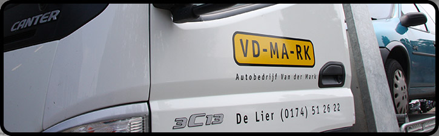
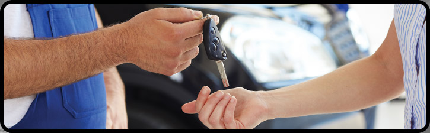
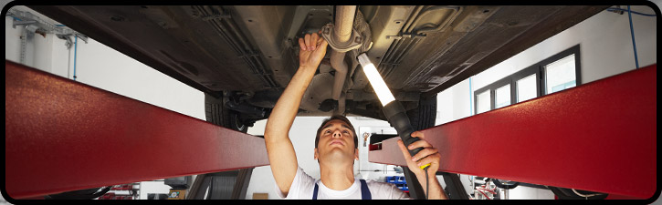
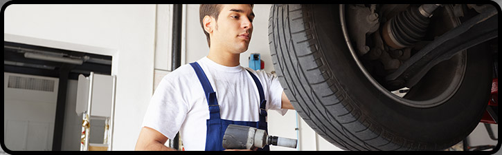

Wie we zijn.
Een familiebedrijf met benzine in de aderen.
Een vertrouwd gezicht in de regio.
Autobedrijf Van der Mark bestaat al meer dan veertig jaar. Het bedrijf ontwikkelde zich van sloopbedrijf tot een allround autobedrijf met een breed dienstenaanbod.
Aan de Burgerdijkseweg beschikt Van der Mark over een garage en een buitenterrein voor gebruikte auto's en demontagevoertuigen.
Het bedrijf is nog altijd een familiebedrijf. Volgens de bestaande website staan persoonlijke service, duidelijke afspraken en heldere informatie over garanties centraal.
Kom kennismaken ↗
Gewoon goed geregeld.
Persoonlijk
Direct contact en aandacht voor uw vraag.
Veelzijdig
Van banden en APK tot onderdelen en demontage.
Duidelijk
Heldere afspraken en praktische service.
Het werk achter de service.
Een indruk van de werkzaamheden en de dagelijkse praktijk.


Een bedrijf waar auto's centraal staan.
De werkplaats, de medewerkers en de dagelijkse werkzaamheden geven het bedrijf een herkenbaar gezicht.
Kom in contact ↗